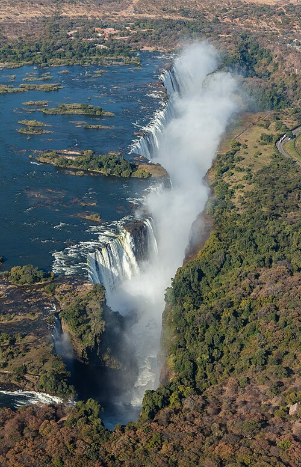

Victoria Falls is a town in the Matabeleland North province of Zimbabwe, located on the Zambezi River. It is famous for the spectacular Victoria Falls (Mosi-oa-Tunya), which is one of the largest and most beautiful waterfalls in the world. The area is also a hub for adventure activities like white water rafting, bungee jumping, and safari tours.
